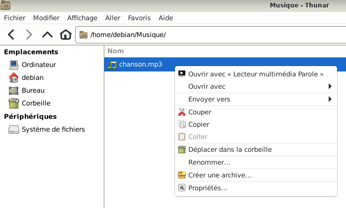
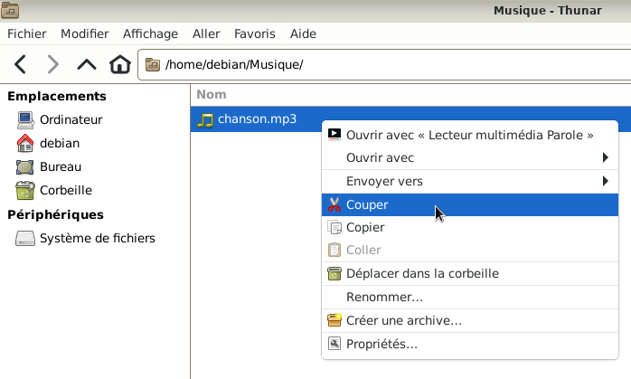
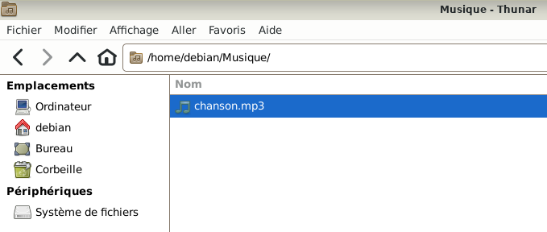
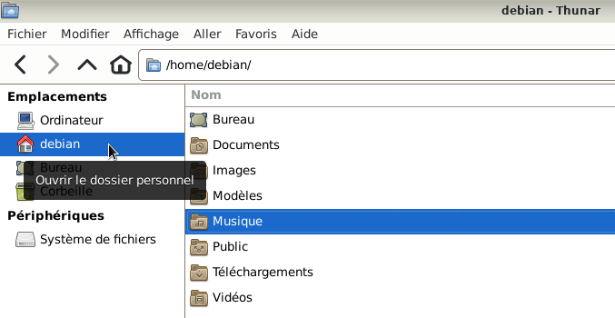
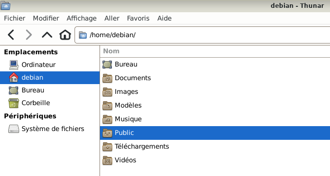
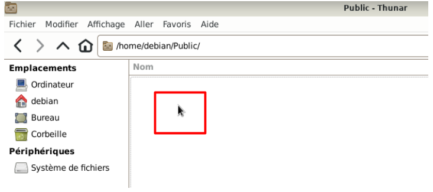
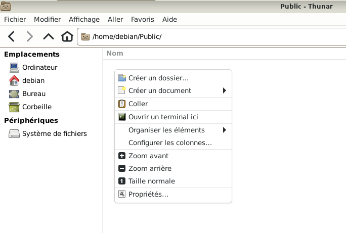
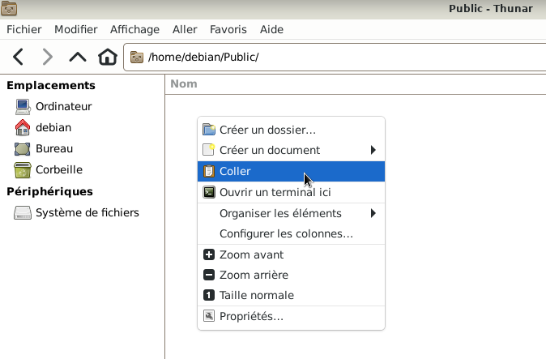
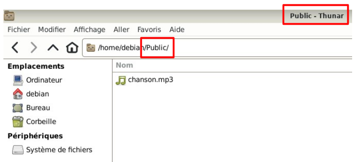
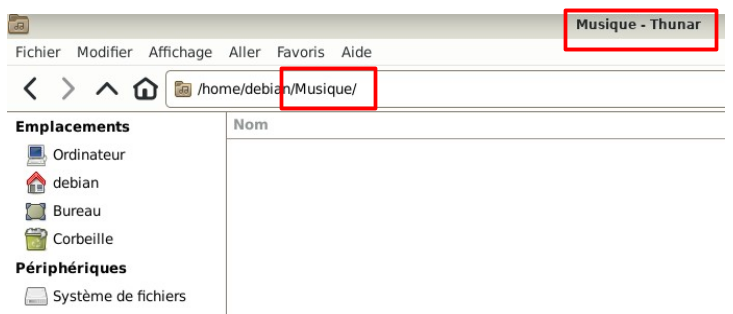

&
Couper un dossier ou un fichier sans les raccourcis clavier : Le site Xfce.
Couper un fichier ou un dossier le déplace du dossier original.
Exemple : Couper le fichier « chanson.mp3 » qui se trouve dans le dossier Musique vers le dossier Public.













L'autre solution, voir le chapitre : Couper avec les raccourcis clavier

Informations sur le logiciel libre et Merci.
Marques déposées :
Ce site ne fait pas partie de Debian, n'est pas produit par le projet
Debian, ni approuvé par le projet Debian.
Ce site n'est pas affilié à Debian. Debian est une marque déposée appartenant
à Software in the Public Interest, Inc.
Contribuer :
Ce site ne fait pas partie de XFCE, n'est pas produit par le projet
XFCE, ni approuvé par le projet XFCE.
Ce site n'est pas affilié à XFCE.
Ce site est juste réalisé par un passionné.